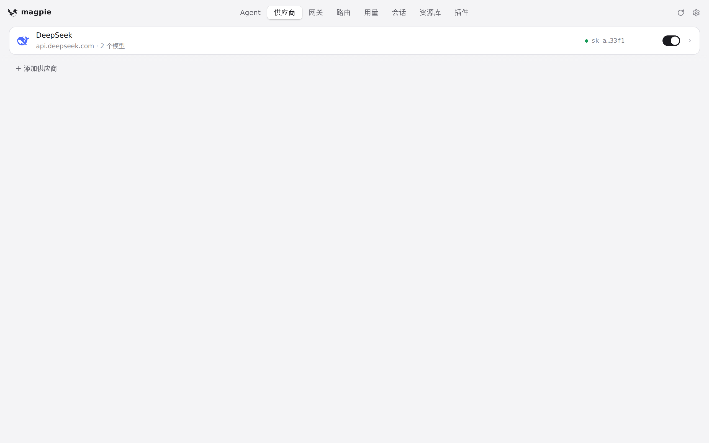
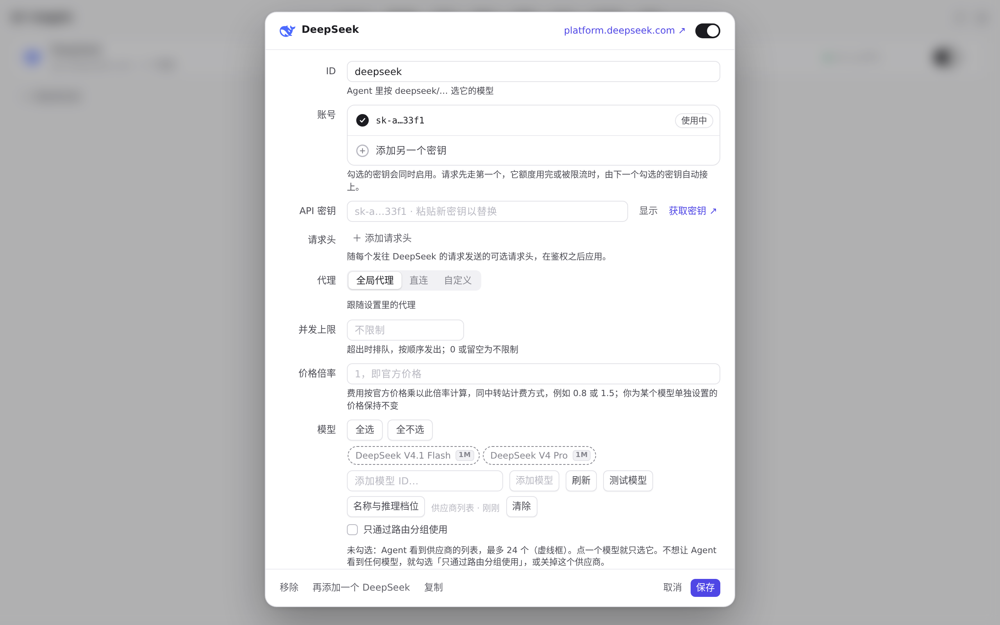
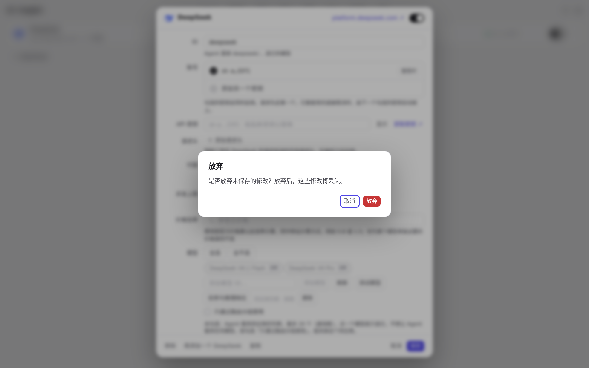
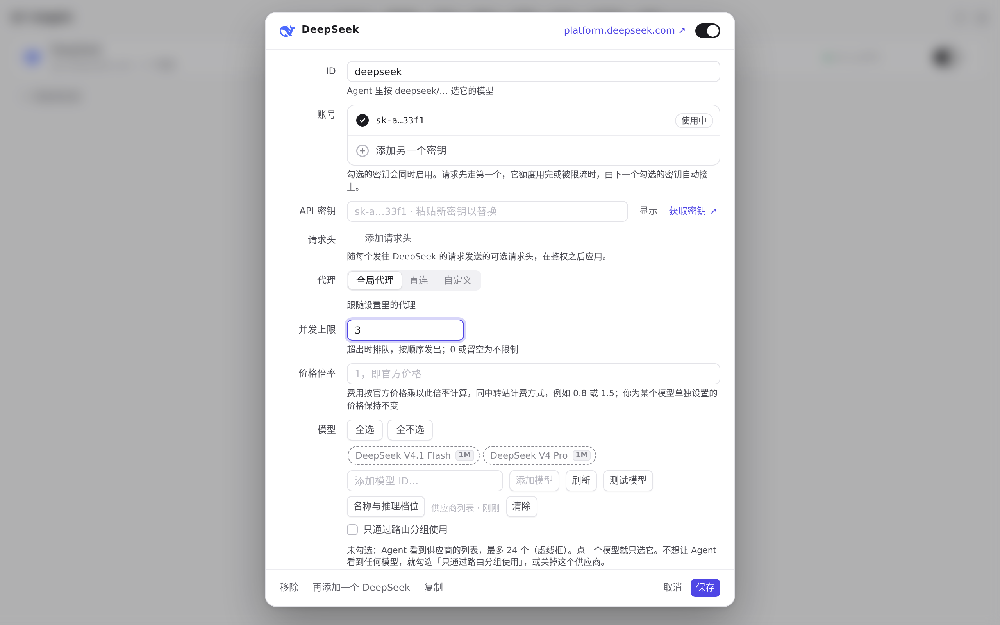
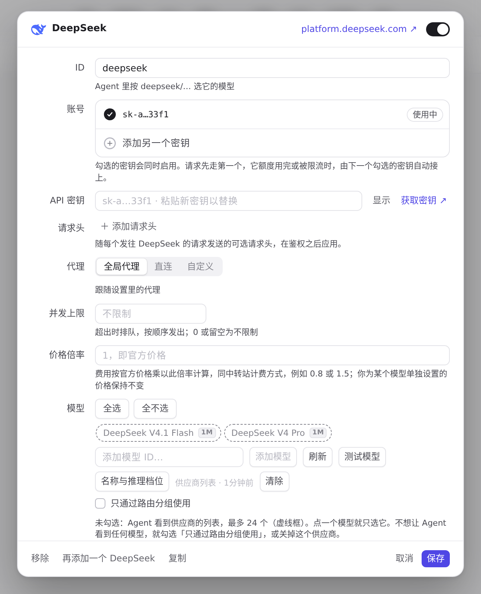
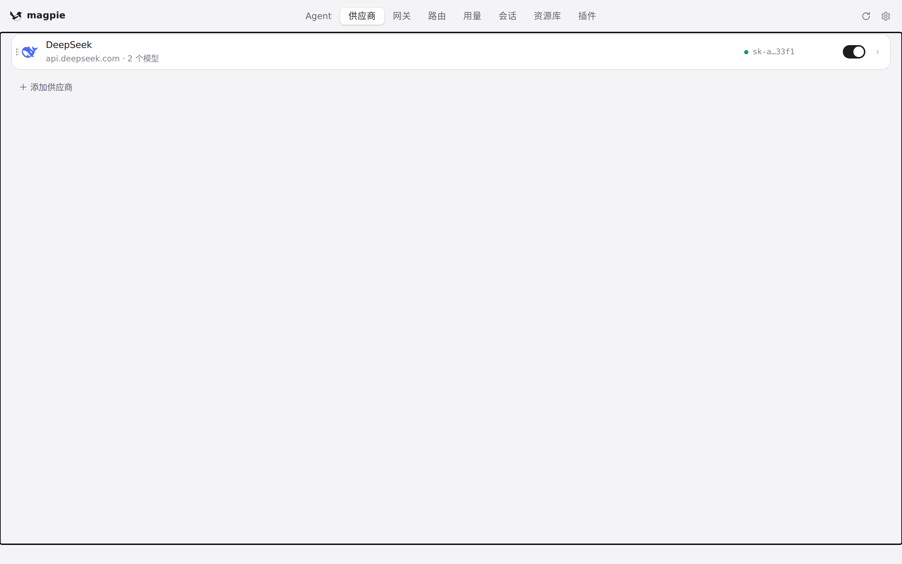
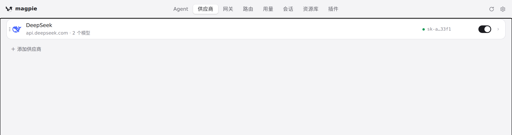

#820 界面预览
commit e6c1cf7 · 回到 PR · 这个 PR 给有未保存改动的供应商/路由/资源库编辑器加了应用内样式的放弃确认对话框（原生 dialog，alertdialog 语义、焦点循环、遮罩），并在移除供应商、路由组、账号/密钥、插件、资源库条目等操作前要求确认；同时给页签加 aria-current、给编辑器控件补 label/描述关系、把首帧的主题与字号提前到样式加载前应用。
红线是鼠标走过的轨迹，红色圆环是一次点击；底部文字是这一步在做什么。空格暂停，← → 逐段查看。

改过编辑器再关闭时的放弃确认 · 供应商页：只有 DeepSeek 一个供应商

改过编辑器再关闭时的放弃确认 · 编辑器打开时的样子

改过编辑器再关闭时的放弃确认 · 按 Esc 关闭有改动的编辑器时出现的确认框

改过编辑器再关闭时的放弃确认 · 点取消后的编辑器与仍被改动的输入框
 改过编辑器再关闭时的放弃确认 · 确认框关闭后的供应商列表
改过编辑器再关闭时的放弃确认 · 确认框关闭后的供应商列表

移除供应商前的确认框，以及未改动编辑器的直接关闭 · 刚打开的编辑器：未改动时的样子

移除供应商前的确认框，以及未改动编辑器的直接关闭 · 按 Esc 关闭未改动的编辑器后的供应商列表

移除供应商前的确认框，以及未改动编辑器的直接关闭 · 未改动的编辑器直接关闭，页面上没有出现确认框